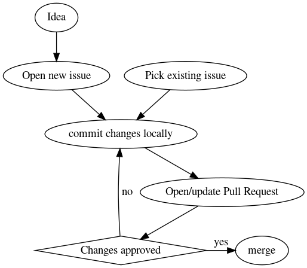

Contributing¶
Overview of the contribution process¶
The graph below illustrates the general process for contributing code changes to 2decomp&fft:

Contributions are accepeted in the form of pull requests targeting the main branch on the 2decomp&fft GitHub repository. See (GitHub docs) Creating a pull request.
By default your GitHub account will not be able to push changes to the 2decomp&fft repo, and you will have to open the pull request from a fork. See (GitHub docs) Creating a pull request from a fork.
Note that the whole process is driven by issues. If you found a bug not currently referenced by an existing issue, or have an idea on how to improve a part of 2decomp&fft, please open a new item on the issue tracker before opening a pull request.